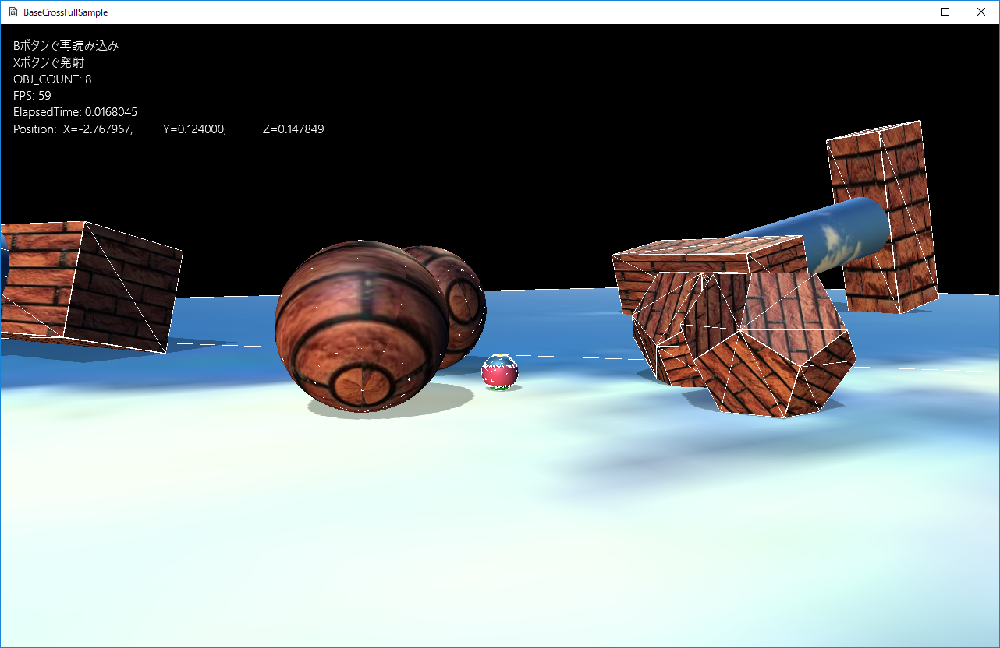

図0702a
プレイヤーを動かすと、大きめの球体と凸型オブジェクトがごろごろ追いかけてきます。Ｂボタンで球を発射できます。当たれがひるみますが、逃げればまた追いかけてきます。
void SeekObject::OnCreate() {
//オブジェクトのグループを得る
auto Group = GetStage()->GetSharedObjectGroup(L"SeekObjectGroup");
//グループに自分自身を追加
Group->IntoGroup(GetThis<SeekObject>());
//ステートマシンの構築
m_StateMachine.reset(new StateMachine<SeekObject>(GetThis<SeekObject>()));
//最初のステートをSeekFarStateに設定
m_StateMachine->ChangeState(FarState::Instance());
}
void SeekObject::SeekBehavior() {
auto Pos = GetComponent<Transform>()->GetPosition();
auto TargetTrans = GetStage()->GetSharedObject(L"Player")->GetComponent<Transform>();
auto TargetPos = TargetTrans->GetPosition();
bsm::Vec3 WorkForce;
WorkForce = Steering::Seek(GetVelocity(), TargetPos, Pos, m_MaxSpeed);
Steering::AccumulateForce(m_Force, WorkForce, m_MaxForce);
}
void NearState::Execute(const shared_ptr<SeekObject>& Obj) {
Obj->SeparationBehavior();
Obj->ArriveBehavior();
if (Obj->GetTargetToLen() >= Obj->GetStateChangeSize()) {
Obj->GetStateMachine()->ChangeState(FarState::Instance());
}
}
class ActivePsConvex : public SeekObject {
Vec3 m_Position;
//メッシュ（描画用）
static shared_ptr<MeshResource> m_ConvexMesh;
//物理計算用
static shared_ptr<PsConvexMeshResource> m_PsConvexMesh;
public:
//構築と破棄
ActivePsConvex(const shared_ptr<Stage>& StagePtr,
const Vec3& Position
);
virtual ~ActivePsConvex();
//初期化
virtual void OnCreate() override;
//現在の速度を得る（仮想関数）
virtual Vec3 GetVelocity() const;
//更新
virtual void OnUpdate() override;
};
//static変数の初期化
shared_ptr<MeshResource> ActivePsConvex::m_ConvexMesh = nullptr;
shared_ptr<PsConvexMeshResource> ActivePsConvex::m_PsConvexMesh = nullptr;
void ActivePsConvex::OnCreate() {
if (!m_ConvexMesh || !m_PsConvexMesh) {
vector<VertexPositionNormalTexture> vertices;
vector<uint16_t> indices;
MeshUtill::CreateDodecahedron(0.5, vertices, indices);
m_ConvexMesh = MeshResource::CreateMeshResource(vertices, indices, false);
m_PsConvexMesh = ObjectFactory::Create<PsConvexMeshResource>(vertices, indices, 0.5f);
}
auto PtrTransform = GetComponent<Transform>();
PtrTransform->SetScale(Vec3(1.0f));
PtrTransform->SetQuaternion(Quat());
PtrTransform->SetPosition(m_Position);
//影をつける
auto ShadowPtr = AddComponent<Shadowmap>();
ShadowPtr->SetMeshResource(m_ConvexMesh);
auto PtrDraw = AddComponent<BcPNTStaticDraw>();
PtrDraw->SetFogEnabled(true);
PtrDraw->SetMeshResource(m_ConvexMesh);
PtrDraw->SetTextureResource(L"WALL_TX");
//物理計算凸面
PsConvexParam param;
//半径にする
param.m_ConvexMeshResource = m_PsConvexMesh;
param.m_Mass = 1.0f;
param.m_MotionType = PsMotionType::MotionTypeActive;
param.m_Quat = Quat();
param.m_Pos = m_Position;
auto PsPtr = AddComponent<PsConvexBody>(param);
PsPtr->SetDrawActive(true);
//親クラスのOnCreateを呼ぶ
SeekObject::OnCreate();
}
void ActivePsConvex::OnUpdate() {
//親クラスのOnUpdateを呼ぶ
SeekObject::OnUpdate();
auto PtrPs = GetComponent<PsConvexBody>();
//現在のフォースを設定
PtrPs->ApplyForce(GetForce());
}
//現在のフォースを設定
PtrPs->ApplyForce(GetForce());